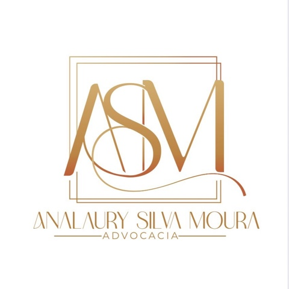

Analaury Silva Moura Advocacia
OAB/MG 195.340
Atendimento próximo e linguagem clara.
Fale com a gente 👇🏻
© 2026 · Analaury Silva Moura Advocacia

OAB/MG 195.340
Atendimento próximo e linguagem clara.
Fale com a gente 👇🏻
© 2026 · Analaury Silva Moura Advocacia